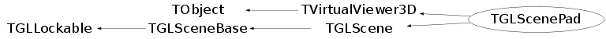

class TGLScenePad: public TVirtualViewer3D, public TGLScene
TGLScenePad Implements VirtualViewer3D interface and fills the base-class visualization structures from pad contents.
Function Members (Methods)
public:
protected:
| TGLLogicalShape* | AttemptDirectRenderer(TObject* id) |
| RootCsg::TBaseMesh* | BuildComposite() |
| void | ComposePolymarker(const TList* padPrimitives) |
| TGLLogicalShape* | CreateNewLogical(const TBuffer3D& buffer) const |
| TGLPhysicalShape* | CreateNewPhysical(UInt_t physicalID, const TBuffer3D& buffer, const TGLLogicalShape& logical) const |
| virtual void | TGLScene::DestroyPhysicalInternal(TGLScene::PhysicalShapeMapIt_t pit) |
| virtual void | TObject::DoError(int level, const char* location, const char* fmt, va_list va) const |
| void | TObject::MakeZombie() |
| void | TGLScene::ReleaseGLCtxIdentity() |
| Int_t | ValidateObjectBuffer(const TBuffer3D& buffer, Bool_t includeRaw) const |
private:
| TGLScenePad(const TGLScenePad&) | |
| TGLScenePad& | operator=(const TGLScenePad&) |
Data Members
public:
| enum TObject::EStatusBits { | kCanDelete | |
| kMustCleanup | ||
| kObjInCanvas | ||
| kIsReferenced | ||
| kHasUUID | ||
| kCannotPick | ||
| kNoContextMenu | ||
| kInvalidObject | ||
| }; | ||
| enum TObject::[unnamed] { | kIsOnHeap | |
| kNotDeleted | ||
| kZombie | ||
| kBitMask | ||
| kSingleKey | ||
| kOverwrite | ||
| kWriteDelete | ||
| }; | ||
| enum TGLLockable::ELock { | kUnlocked | |
| kDrawLock | ||
| kSelectLock | ||
| kModifyLock | ||
| }; |
protected:
Class Charts
{kind=link}
{kind=link}
{kind=link}
{kind=link}

Function documentation
void AddHistoPhysical(TGLLogicalShape* log, const Float_t* histColor = 0)
Scale and rotate a histo object to mimic placement in canvas.
void ObjectPaint(TObject* obj, Option_t* opt = "")
Override of virtual TVirtualViewer3D::ObjectPaint(). Special handling of 2D/3D histograms to activate Timur's histo-painters.
void PadPaintFromViewer(TGLViewer* viewer)
Entry point for requesting update of scene's contents from gl-viewer.
void PadPaint(TVirtualPad* pad)
void BeginScene()
Start building of the scene. Old contents is dropped, unless smart-refresh is in active. Then the object supporting it are kept in a cache and possibly reused. TVirtualViewer3D interface overload - see base/src/TVirtualViewer3D.cxx for description of viewer architecture.
void EndScene()
End building of the scene. TVirtualViewer3D interface overload - see base/src/TVirtualViewer3D.cxx for description of viewer architecture
Int_t AddObject(const TBuffer3D& buffer, Bool_t* addChildren = 0)
Add an object to the viewer, using internal physical IDs TVirtualViewer3D interface overload - see base/src/TVirtualViewer3D.cxx for description of viewer architecture
Int_t AddObject(UInt_t physicalID, const TBuffer3D& buffer, Bool_t* addChildren = 0)
Add an object to the scene, using an external physical ID TVirtualViewer3D interface overload - see base/src/TVirtualViewer3D.cxx for description of viewer architecture
Bool_t OpenComposite(const TBuffer3D& buffer, Bool_t* addChildren = 0)
Open new composite container. TVirtualViewer3D interface overload - see base/src/TVirtualViewer3D.cxx for description of viewer architecture.
void CloseComposite()
Close composite container TVirtualViewer3D interface overload - see base/src/TVirtualViewer3D.cxx for description of viewer architecture
void AddCompositeOp(UInt_t operation)
Add composite operation used to combine objects added via AddObject TVirtualViewer3D interface overload - see base/src/TVirtualViewer3D.cxx for description of viewer architecture
Int_t ValidateObjectBuffer(const TBuffer3D& buffer, Bool_t includeRaw) const
Validate if the passed 'buffer' contains all sections we require to add object. Returns Int_t combination of TBuffer::ESection flags still required - or TBuffer3D::kNone if buffer is valid. If 'includeRaw' is kTRUE check for kRaw/kRawSizes - skip otherwise. See base/src/TVirtualViewer3D.cxx for description of viewer architecture
TGLLogicalShape* CreateNewLogical(const TBuffer3D& buffer) const
Create and return a new TGLLogicalShape from the supplied buffer
CreateNewPhysical(UInt_t physicalID, const TBuffer3D& buffer, const TGLLogicalShape& logical) const
Create and return a new TGLPhysicalShape with id 'ID', using 'buffer' placement information (translation etc), and bound to suppled 'logical'
void ComposePolymarker(const TList* padPrimitives)
TGLLogicalShape* AttemptDirectRenderer(TObject* id)
Try to construct an appropriate logical-shape sub-class based on id'class, following convention that SomeClassGL is a suitable renderer for class SomeClass.
TGLScenePad(const TGLScenePad& )
TGLScenePad& operator=(const TGLScenePad& )
TVirtualPad* GetPad() const
void SetPad(TVirtualPad* p) { fPad = p; /* also need to drop contents */ }
{ return fPad; }